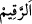
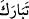
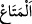
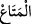
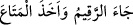
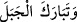
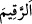

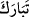
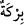
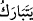
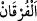

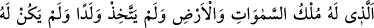
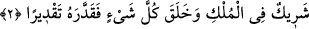
Molla Fenârî Fâtiha Tefsîri’nde şöyle der: “Sâhib b. Abbâd “
”, “
” ve “
”
kelimelerinin mânâları hakkında tereddüt ettiğinden Arap kabileleri arasında
dolaşıyordu. Bir kadının “
Metâ nerede?” dediğini, küçük oğlunun ise “
Rakîm geldi, metâ‘ı aldı ve dağa tebârük etti.” diye cevap
verdiğini işitti. Bunun üzerine bu kelimelerin mânâsını sordu. “
”in köpek, “
”ın
suyla ıslatılıp kapların silindiği bez parçası ve “
”nin de yükselmek, çıkmak
anlamına geldiğini öğrendi.
Bazı kimseler ‘bereket, bir şeyde ilâhî hayrın bulunmasıdır’ derler. İçinde su devamlı
olarak durduğu ve bulunduğu için suyun toplandığı küçük göl ve havuza da “
” denir.
Dolayısıyla “
” fiilinin mânâsı herhangi bir intikal/değişme olmaksızın devamlı ve
sâbit oldu demektir. O’nun için Allah Teâlâ hakkında bu fiilin muzârî/geniş zaman
siygası olan “
” denilmez. Çünkü o intikal/değişme içindir.
Burhânu’l-Kur’ân’da der ki: “Bu lafız ancak Allah Teâlâ hakkında ve yalnızca
mazi/geçmiş zaman olarak kullanılır. Bu yerde özellikle zikredilmiştir. Çünkü bu âyette
bu lafızdan sonra çok önemli bir husus gelmektedir. O da Allah’ın bütün kitaplarının
mânâlarına şâmil olan Kur’ân’dır.
“
” iki şeyin arasını ayırmak anlamına gelen bir masdardır. Kur’ân hak ve bâtılı,
mü’min ve kâfiri son derece birbirinden ayırdığı için ‘Furkân’ diye isimlendirilmiştir.
Bu âyet Ebû Hanife’nin “Hz. Peygamber’e itâat eden cinlere azâbdan kurtulmaktan
başka bir sevap yoktur. Fakat isyan ettiklerinde onlara azâb vardır.” şeklinde görüşü
için bir delildir. Çünkü âyette Hz. Peygamber (s.a.)’in “âlemlere uyarıcı (nezîr)”
olmasıyla yetinilmiş, müjdeleyici (beşîr) sıfatına değinilmemiştir.
el-İrşâd’da “Hz. Peygamber (s.a.)’in müjdeleyici olduğunun zikredilmemesi, sözün
kâfirlerin durumuna uygun düşmesi içindir.” der.
2. Göklerin ve yerin mülkü O’nundur. O bir çocuk edinmemiştir, mülkünde ortağı
yoktur. Her şeyi yaratmış, ona ölçü, biçim ve düzen vermiştir.
“Göklerin ve yerin mülkü O’nundur.” Özel olarak O’na âiddir. Ne müstakillen ne de
ortak olarak başkalarının değildir. Mülk, emir ve yasaklamayla her hususta tasarrufta
bulunmak demektir. Kâşifî der ki: “Göklerin ve yerlerin padişahıdır ve onları
yaratmada tektir. Öyle ise bu husustaki tasarruf ona âiddir.”
Sonra Allah yahudi ve hristiyanları reddetmek üzere şöyle buyurmuştur: “O” mülküne
mîrasçı bırakmak için “bir çocuk edinmemiştir.” Çünkü O ölümü olmayan diridir.
Sonra Allah Kureyş’i reddetmek üzere şöyle buyurmuştur: “Mülkünde ortağı yoktur.”